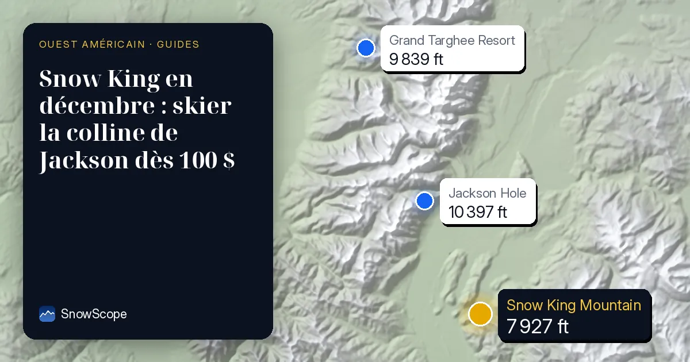

Snow King en décembre : skier la colline de Jackson dès 100 $
Snow King est la réponse de Jackson aux stations de ski coûteuses : une piste raide de la ville accessible à pied, avec des forfaits journaliers à partir de 100 $ et un manteau neigeux décembriste qui s'épaissit régulièrement au cours du mois. Le 15, la mi-montagne atteint généralement 71 cm, le sommet en recevant encore davantage.
Consultez les prévisions neige en temps réel pour Snow King Mountain sur l'application SnowScopeHauteurs de neige, alertes poudreuse et carte 3D, gratuitement.
Ce que vous skiez
Snow King se situe à la lisière du centre-ville de Jackson, s'élevant de 1 902 m à 2 416 m. Le terrain balisé comprend 9 remontées et environ 18 km de pistes. La piste est raide et directe, appréciée des habitants qui veulent éviter le trajet jusqu'aux plus grandes stations.

Épaisseur de neige en décembre selon l'altitude
La neige arrive à la mi-montagne (2 159 m) à la mi-octobre lors d'un hiver typique. Au 1er décembre, la mi-montagne a généralement 49 cm. Deux semaines plus tard, le 15 décembre, l'épaisseur typique grimpe à 71 cm. Le jour de Noël apporte 86 cm. Le sommet de la montagne (2 416 m) grimpe plus haut : 87 cm le 15 décembre typique, et 101 cm à Noël.
La base, en revanche, prend du retard. Le 15 décembre, l'épaisseur de base typique n'est que de 54 cm, et les années maigres (une sur dix) peuvent afficher aussi peu que 35 cm. Les rochers peuvent être visibles à la base en début de saison, alors skiez plus haut quand vous le pouvez.

À quelle fréquence y a-t-il de la neige à la mi-mois ?
Le 15 décembre, 87 % des hivers de notre historique ont eu au moins 50 cm à la mi-montagne ; 98 % l'ont eu au sommet. Même lors d'un décembre maigre, la mi-montagne conservait en moyenne 49 cm. Ces probabilités sont assez bonnes pour planifier un voyage autour.
Tarif et forfaits
Un forfait journalier adulte (15–64 ans) commence à 100 $ en ligne. Les dates chargées et les jours fériés coûtent plus cher. Snow King est aussi une station Indy Pass : le forfait Indy Base coûte 419 $ pour les adultes (deux jours dans chacune de 300+ stations avec dates d'exclusion), et l'Indy+ coûte 469 $ sans exclusions.
Si vous pensez à deux jours dans la vallée, acheter un seul forfait Indy+ et choisir Snow King et l'une des plus grandes stations à proximité pourrait vous faire économiser par rapport à l'achat de forfaits journaliers à chacune.
Comment cela se compare : Grand Targhee et Jackson Hole
Grand Targhee se situe au-delà du col Teton du côté de l'Idaho. Le 15 décembre, elle a généralement 118 cm à la mi-montagne—bien plus que Snow King. Chaque hiver de notre historique a enregistré 50 cm ou plus à Targhee à cette date. Un forfait journalier là-bas coûte entre 125 $ et 180 $ selon la date. Le trajet vaut le coup si l'épaisseur de neige compte plus que le budget.
Jackson Hole Mountain Resort, plus haut dans la vallée, avait 93 cm à la mi-montagne un 15 décembre typique. Snow King reste l'accès le moins cher aux pistes de la vallée et la marche la plus rapide depuis la ville.
La tendance long terme
La neige du début décembre à la mi-montagne s'est légèrement amenuisée au fil du temps. Lors des 15 premiers hivers de notre historique (1980–81 à 1994–95), l'épaisseur typique du 15 décembre était 88 cm et 100 % des hivers atteignaient 50 cm ou plus. Lors des 15 hivers les plus récents (2011–12 à 2025–26), l'épaisseur typique était 69 cm et la part au-dessus de 50 cm est tombée à 80 %. L'hiver dernier n'a livré que 44 cm le 15 décembre, bien en deçà de la médiane.
Conseils aux skieurs
- Allez à pied de la place Jackson à la base et évitez le parking ; l'esprit de la piste de la ville fait partie de l'attrait.
- Visez la mi-montagne et plus lors des journées en début de saison ; la base est mince et peut montrer des rochers.
- Associez une journée à Snow King avec une à Grand Targhee pour un long week-end à deux stations moins cher qu'une journée unique à la grande station.
- Le verglas matinal est courant sur les pentes orientées nord en début décembre ; planifiez votre première piste pour attraper le corduroy frais si vous pouvez.
- Si un voyage en décembre est confirmé, consultez le forfait Indy : deux jours dans des stations de milieu de gamme coûtent souvent moins qu'un seul forfait en haute saison.
À propos de ces chiffres
Les hauteurs de neige des stations sont la neige la plus épaisse sur le haut du domaine à la date indiquée ; ce sont des estimations pour une zone, pas une mesure en un point. Les prévisions peuvent changer. Consultez toujours le bulletin d'avalanche officiel avant le hors-piste.
Bulletins d'avalanche officiels: Bridger-Teton Avalanche Center
Citer ce bulletin
Pour la recherche, l'enseignement ou la presse : chiffres et graphiques réutilisables librement sous CC BY 4.0 avec cette citation.
SnowScope (2026), Snow King en décembre : skier la colline de Jackson dès 100 $, https://snowscope.app/blog/fr/2026/11/snow-king-jackson-december-budget-skiing.html, consulté le 2026-11-14
SnowScope (Atlas Labs). (2026, November 14). Snow King en décembre : skier la colline de Jackson dès 100 $. SnowScope snow reports. https://snowscope.app/blog/fr/2026/11/snow-king-jackson-december-budget-skiing.html
BibTeX
@misc{snowscope2026snowkingjacksondecemberb,
author = {{SnowScope (Atlas Labs)}},
title = {Snow King en décembre : skier la colline de Jackson dès 100 $},
year = {2026},
month = nov,
howpublished = {\url{https://snowscope.app/blog/fr/2026/11/snow-king-jackson-december-budget-skiing.html}},
note = {Published 2026-11-14 19:27 UTC; accessed 2026-11-14}
}· CC BY 4.0 · Méthodes, données et outils →
Snow King Mountain : neige et température selon l'altitude, cet hiver vs l'hiver dernier (outils) →
Suivre Snow King Mountain
Gratuit : un message quand la neige arrive, et la météo chaque matin.